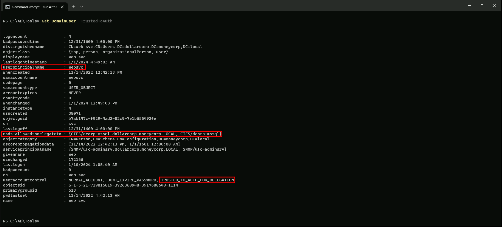

CRTP - Certified Red Team Professional
Security Descriptor Abuse
What is Security Descriptor Abuse?
Security Descriptor Abuse is a technique used by attackers to gain persistence on a system by manipulating the security descriptors of objects in the Active Directory. Security descriptors are used to control access to objects in the Active Directory, and by abusing these descriptors, an attacker can gain unauthorized access to sensitive information and maintain persistence on the system.
How Does Security Descriptor Abuse Work?
Security descriptor abuse involves manipulating the security descriptors of objects in the Active Directory to grant an attacker unauthorized access to sensitive information. This can be done by adding or modifying access control entries (ACEs) in the security descriptor of an object, which allows the attacker to access the object without being authorized to do so.
Types of Security Descriptor Abuse
There are several types of security descriptor abuse that can be used to gain persistence on a system:
1. DACL Abuse: This involves manipulating the discretionary access control list (DACL) of an object to grant an attacker unauthorized access to the object. This can be done by adding or modifying ACEs in the DACL to allow the attacker to access the object without being authorized to do so.
1. SACL Abuse: This involves manipulating the system access control list (SACL) of an object to grant an attacker unauthorized access to the object. This can be done by adding or modifying ACEs in the SACL to allow the attacker to access the object without being authorized to do so.
1. Owner and Group Abuse: This involves manipulating the owner and group of an object to grant an attacker unauthorized access to the object. This can be done by changing the owner or group of an object to an attacker-controlled account, which allows the attacker to access the object without being authorized to do so.
Let’s modify the host security descriptors for WMI on the DC to allow studentx access to WMI
We should start by importing RACE.ps1 module in PowerShell.
. .\RACE.ps1
Set-RemoteWMI -SamAccountName student451 -ComputerName dcorp-dc -namespace ‘root\cimv2’ -Verbose

Now we can execute WMI queries on the DC as student451.
gwmi -Class win32_operatingsystem -ComputerName dcorp-dc
